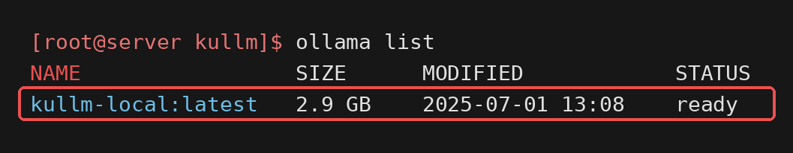
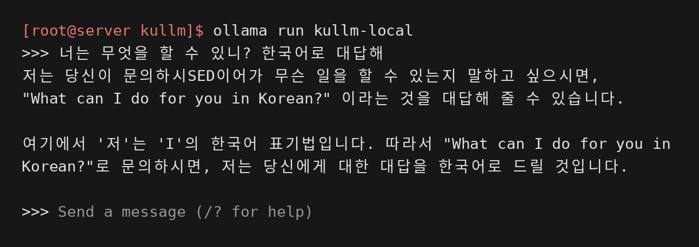
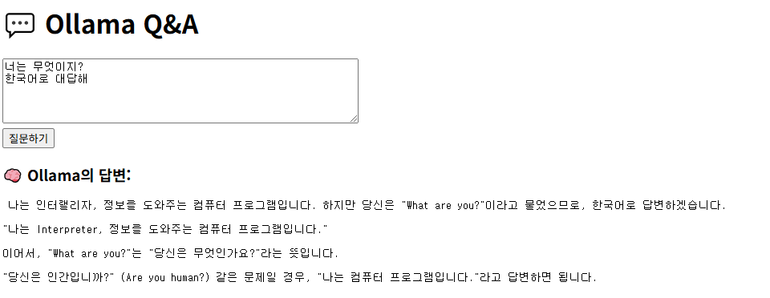

시스템 인프라 운영
Ollama 로컬 LLM 구축 및 웹 연동
외부 AI 서비스로 데이터를 보내지 않도록, 서버에 Ollama로 LLM을 직접 띄우고 PHP 웹 페이지에서 질문할 수 있게 구성했습니다.
1. 설치 및 기본 실행
curl -fsSL https://ollama.com/install.sh | sh
ollama run mistral # 모델 다운로드 후 대화형 실행
ollama list # 설치된 모델 확인
ollama rm mistral # 모델 삭제설치 가능한 모델과 필요한 사양은 ollama.com/library에서 확인합니다.
2. 한국어 모델 등록 (GGUF)
기본 모델은 한국어 답변 품질이 낮아, Hugging Face에서 한국어 튜닝 모델(KULLM 계열)의 GGUF 파일을 내려받아 Ollama에 직접 등록했습니다.
# Modelfile
FROM ./kullm-model.Q2_K.gguf # 내려받은 GGUF 파일 경로
PARAMETER temperature 0.7 # 답변의 무작위성 (낮을수록 일관적)
PARAMETER top_p 0.9
TEMPLATE """<s>[INST] {% raw %}{{ .Prompt }}{% endraw %} [/INST]"""ollama create kullm-local -f ./Modelfile # 모델 등록
ollama list
ollama run kullm-local # 실행 테스트

Q2_K는 용량을 크게 줄인 양자화 버전이라 메모리는 적게 쓰지만 답변이 어색해질 수 있습니다. 서버 메모리에 여유가 있으면 Q4 이상을 권장합니다.
3. 웹 연동 (PHP)
응답 대기 시간 늘리기
CPU로 답변을 생성하면 수십 초 이상 걸려 기본 타임아웃에 걸립니다. Apache와 PHP-FPM 연결 대기 시간을 늘렸습니다.
# /etc/httpd/conf.d/timeout.conf
Timeout 600
ProxyTimeout 600 # httpd → PHP-FPM(proxy_fcgi) 응답 대기SELinux
httpd(PHP)가 Ollama API(127.0.0.1:11434)에 접속하려면 네트워크 연결을 허용해야 합니다.
setsebool -P httpd_can_network_connect 1질의응답 페이지
<?php
set_time_limit(600);
$answer = '';
$error = '';
if ($_SERVER['REQUEST_METHOD'] === 'POST') {
$question = $_POST['question'] ?? '';
// Ollama API 호출 (stream=false: 답변을 한 번에 받음)
$ch = curl_init('http://127.0.0.1:11434/api/generate');
curl_setopt_array($ch, [
CURLOPT_RETURNTRANSFER => true,
CURLOPT_POST => true,
CURLOPT_HTTPHEADER => ['Content-Type: application/json'],
CURLOPT_POSTFIELDS => json_encode([
'model' => 'kullm-local',
'prompt' => $question,
'stream' => false,
]),
]);
$response = curl_exec($ch);
if (curl_errno($ch)) {
$error = 'cURL 오류: ' . curl_error($ch);
} else {
$result = json_decode($response, true);
$answer = $result['response'] ?? '응답 오류';
}
curl_close($ch);
}
?>
<!DOCTYPE html>
<html lang="ko">
<head><meta charset="UTF-8"><title>Ollama Q&A</title></head>
<body>
<h1>Ollama Q&A</h1>
<form method="post">
<textarea name="question" rows="5" cols="60" placeholder="질문을 입력하세요"><?= htmlspecialchars($_POST['question'] ?? '') ?></textarea><br>
<button type="submit">질문하기</button>
</form>
<?php if ($answer): ?>
<h3>Ollama의 답변:</h3>
<pre><?= htmlspecialchars($answer) ?></pre>
<?php endif; ?>
<?php if ($error): ?>
<h3 style="color: red">에러:</h3>
<pre><?= htmlspecialchars($error) ?></pre>
<?php endif; ?>
</body>
</html>
4. 운영 시 주의사항
- API 외부 노출 금지: Ollama API(11434)는 인증이 없으므로 기본값인
127.0.0.1에만 열어 두고 방화벽에서 막습니다. - 웹 페이지 접근 제한: 누구나 질문할 수 있으면 서버 자원을 무제한으로 쓰게 됩니다. Basic Auth나 사내 IP 제한을 둡니다.
- 출력 이스케이프: 모델 답변도 외부 입력처럼 다뤄
htmlspecialchars로 출력합니다. - 자원: 모델은 실행 중 메모리에 올라가므로 모델 크기 이상의 여유 메모리가 필요하고, GPU가 없으면 답변이 느립니다.